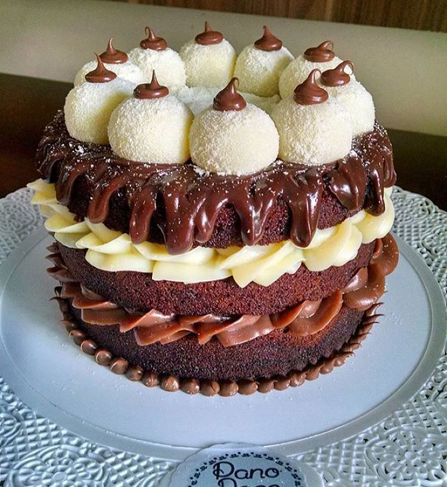

NAKED CAKE DE LEITE NINHO COM NUTELLA

INGREDIENTES DA MASSA
4 ovos
1 e 1/2 xícara e chá de água morna
1 xícara de chá de óleo de milho ou girassol
2 xícaras de chá de açúcar peneirado
3/4 de xícara de chá de chocolate em pó
2 e 1/2 xácaras de chá de farinha de trigo peneirada
1/2 colher de café de bicarbonato de sódio
1 colher de sopa de fermento em pó
1 colher de café de sal
MODO DE PREPARO
1. Em uma tigela, misture a farinha de trigo, o bicarbonato de sódio, o fermento em pó e o sal. Reserve.
2. Em outra tigela, misture o açúcar e o chocolate em pó.
3. Acrescente os ovos e o óleo e misture bem.
4. Adicione, aos poucos, a mistura de farinha de trigo, intercalando com a água, e mexa bem.
5. Leve para assar em forno preaquecido a 180°C por cerca de 50 minutos.
6. Retire do forno, espere esfriar e corte em 3 fatias iguais.
7. Coloque o recheio de brigadeiro de leite ninho em um saco de confeitar com o bico de sua preferência e recheie as duas metades do bolo.
8. Coloque o recheio de nutella em um saco de confeitar com o bico de sua preferência e cubra o bolo.
INGREDIENTES DO RECHEIO DE NUTELLA
1 lata de leite condensado
1 colher de sopa de manteiga sem sal
1 pote pequeno de Nutella
1 pote pequeno de Nutella
1 colher de sopa de farinha de trigo
1 lata de creme de leite
MODO DE PREPARO
1. Em uma panela, misture o leite condensado, a manteiga, a Nutella, o chocolate em pó, a farinha de trigo e o creme de leite.
2. Leve ao fogo médio, mexendo sem parar, até começar a desgrudar do fundo da panela.
3. Desligue o fogo e espere esfriar antes de empregar no bolo.
INGREDIENTES BRIGADEIRO DE LEITE NINHO
1 lata de leite condensado
250 g de chocolate branco picado
4 colheres de sopa de leite Ninho
1 colher de sopa de farinha de trigo
1 lata de creme de leite
MODO DE PREPARO
1. Em uma panela, misture o leite condensado, o chocolate branco, o leite Ninho, a farinha de trigo e o creme de leite.
2. Leve ao fogo médio, mexendo sem parar até começar a desgrudar do fundo da panela.
3. Desligue o fogo e espere esfriar antes de empregar no bolo.
Bom Apetite!
|